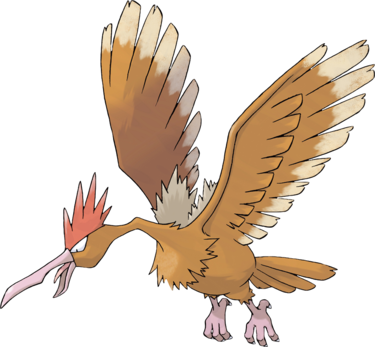

Rapasdepic ressemble à un grand oiseau et plus particulièrement à un rapace. Il a une crête rouge à cinq pics. Sur son corps se trouve une fourrure beige. Il a les yeux blancs avec des pupilles noires et possède un très large bec pointu et d'immenses ailes. Il possède également une queue à quatre plumes ainsi que des serres puissantes. Rapasdepic est craint de tous les Pokémon oiseaux plus petits que lui, car il attaque sans motif apparent. Il aime particulièrement planer au-dessus des nuages, là où la plupart des oiseaux ne volent pas..